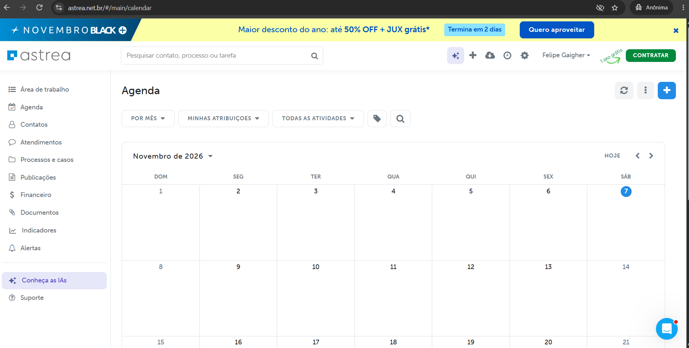
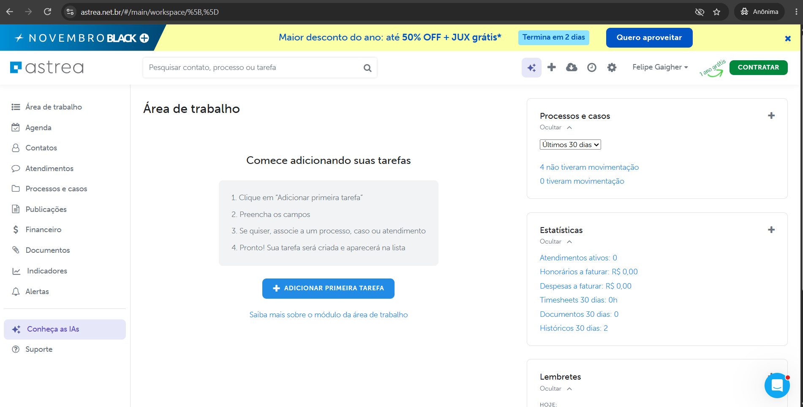
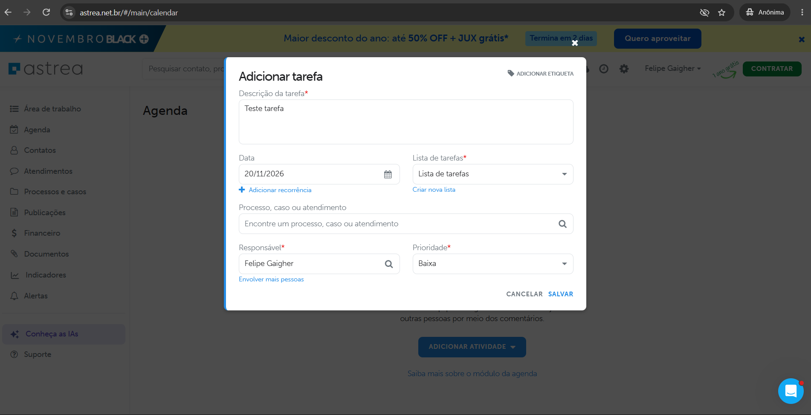
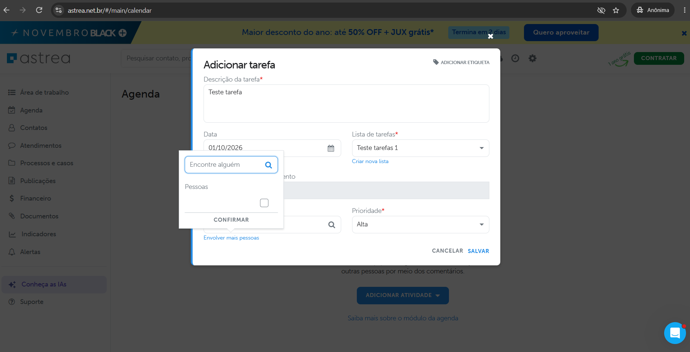
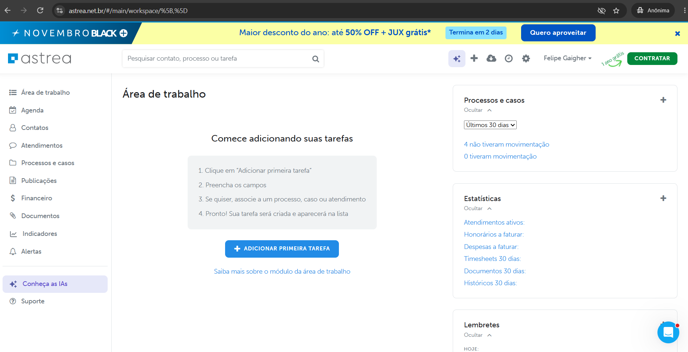

Questão 1, documento-fonte dos slides. Cinco frames de 1920 por 1080. Mesma direção visual da Questão 2. Os prints vêm de evidencias/, com o número da tela do registro.
Questão 1, item 1 de 3. Diagnóstico
Os 5 problemas de experiência mais relevantes que você encontrou, com evidências, e por que cada um importa para quem usa o produto.
Percorri o trial com foco na gestão de atividades: Área de trabalho, Agenda e a criação de atividade. Cada tela está registrada com fato e hipótese, e cada cor foi medida no print. Os cinco problemas abaixo são os que mais custam a quem vive de prazo.
| Nº | Problema | Tipo | Telas |
|---|---|---|---|
| P1 | O prazo não domina a tela que existe para ele | Hierarquia e densidade | 14, 17 a 20 |
| P2 | Dois nomes e três lugares para a mesma atividade | Arquitetura de informação | 10, 11, 13, 14 |
| P3 | Criar uma atividade interrompe quem cria | Usabilidade de fluxo | 14, 15, 16 |
| P4 | Três azuis, três cinzas, três jeitos de criar | Consistência | 11, 13, 14, 17 a 20 |
| P5 | A moldura compete com o trabalho | Hierarquia e ruído | 11, 13 |
Sintoma e causa vêm separados em cada problema. O sintoma é o que a tela mostra. A causa é a hipótese que o slide 5 manda confirmar.


Questão 1, item 1 de 3. Diagnóstico, problemas 1 e 2

Questão 1, item 1 de 3. Diagnóstico, problemas 3 e 4

| Azuis | Marca #008fd5, componente #228be6, campanha #0255c4. Mesma tela |
| Cinzas | #202124 do Material, #6c757d do Bootstrap, #dee2e6 do Mantine |
| Criar | "Adicionar primeira tarefa" em caixa alta, "Adicionar atividade" com seta de menu, e um "+" redondo na Agenda |
| Seletores | Nativo do navegador no widget, customizado no modal |
| Azul | A mesma cor para link, para número de estatística e para botão |
Questão 1, item 1 de 3, problema 5. Item 2 de 3, princípios
Quais foram os principais princípios que guiariam a sua proposta de redesign do Astrea.

| Princípio | O que ele decide |
|---|---|
| O prazo primeiro | O dado que não pode falhar é o mais visível em toda tela de atividade. Cor e texto, nunca só cor |
| Uma palavra, um lugar | Um nome para cada objeto e um caminho para cada ação. Atividade, com tipos. O Kanban prometido aparece no menu, em todo plano |
| A moldura é a âncora | Cabeçalho, menu e ações no mesmo lugar em tela nova e legada. O conteúdo migra, a casa fica |
| Todo erro tem saída | Nenhum botão morre em silêncio. Cada estado de erro diz o que houve e como voltar |
| Densidade de quem olha trinta vezes por dia | Compacto por padrão, respirado por escolha. Tabela quando se compara, card quando se age |
| Mesmo padrão para tudo, inclusive a IA | A IA entra como componente do sistema, com confirmar e desfazer. Sem paleta nem ícone à parte |
Cada princípio aparece em pelo menos uma linha do contrato da tela da Questão 3. É a ponte entre o diagnóstico e o que vai para a tela.
Questão 1, item 3 de 3. O que validar
Quais hipóteses do seu diagnóstico você confirmaria antes de seguir, e como.
| Hipótese | Como confirmar | Fonte |
|---|---|---|
| P1. A densidade baixa atrapalha o planejamento do mês | Analytics: qual visão da Agenda é mais usada e por quanto tempo. Cinco entrevistas com quem controla prazo no escritório | Analytics do produto, pesquisa |
| P1. A tarefa não aparecer é bug, não filtro | Repetir o teste com data de hoje e filtro em "Todas". Abrir chamado se persistir | Teste próprio, suporte |
| P2. "Tarefa" e "atividade" confundem | Chamados com "onde está" ou "não achei". Teste de cinco segundos com a tela da Agenda | Suporte, pesquisa |
| P3. O modal de criar tem abandono | Funil do modal: aberto, preenchido, salvo. Tempo até salvar. Quantas atividades nascem com data passada e por quê | Analytics, suporte |
| P4. A inconsistência custa reaprendizado | Que existe, o inventário já prova. O custo se mede em bugs visuais abertos e tempo de handoff | Backlog, time de design |
| P5. O ruído da moldura custa atenção | Cliques na faixa e no X dela por usuário ativo. Perguntar ao marketing a conversão da faixa dentro do produto, contra o custo em CSAT | Analytics de marketing, CSAT |
A regra de corte: hipótese que custa caro corrigir se confirma antes. Hipótese que se corrige por token segue direto para o plano da Questão 2, porque desfazer custa um commit.